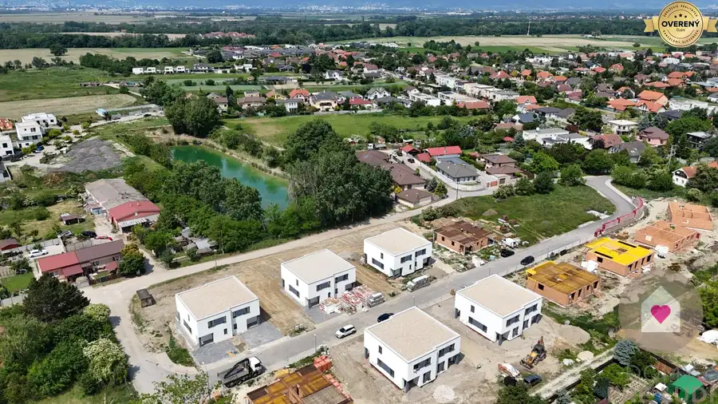
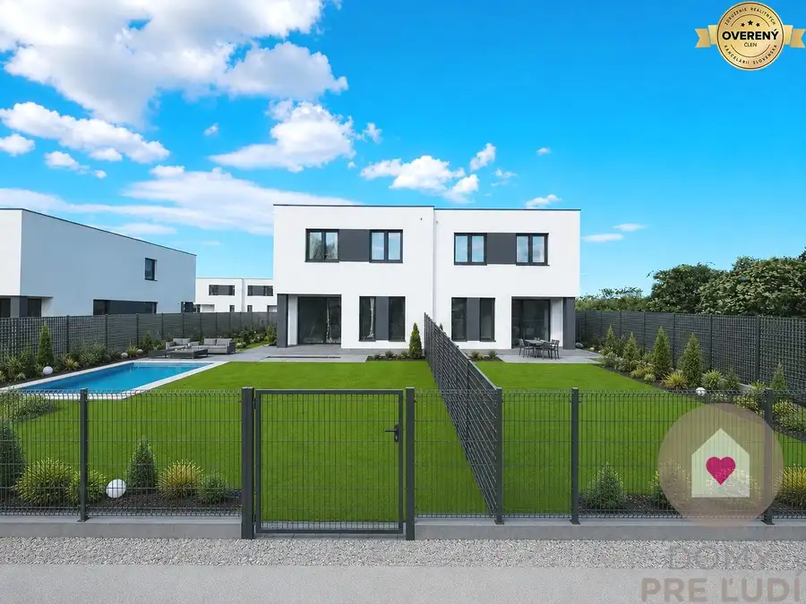
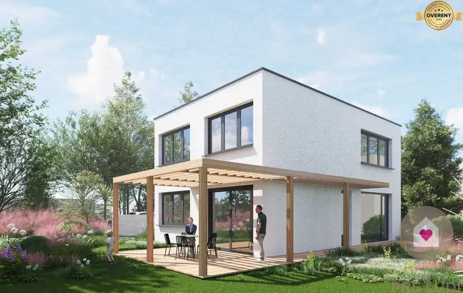

Skolaudovaný 4 izbový RD, úp 128 m2 s tep. čerpadlom, pozemok 405 m2
Zálesie
- Dispozícia4-izbový
- Plocha128 m²
- Stavholopriestor
- Vlastníctvoosobné
- Energetická triedaA
O nehnuteľnosti
V obci Zálesie, v tichej lokalite plnej zelene a mimo rušných ciest Vám ponúkame na predaj novostavbu priestranného 2 podlažného rodinného domu.
ZÁKLADNÉ PARAMETRE
:
Celková podlahová plocha domu je 128m2 m2, pozemok, ktorý prislúcha k domu má výmeru 405 m2. Nakoľko zastavaná plocha je „iba“ 87 m2, zostávajúci pozemok je dobre využiteľný či už na realizáciu bazéna, na vybudovanie detského ihriska, okrasnej prípadne úžitkovej záhrady a pod.
DISPOZÍCIA:
1.NP: - prestrešený vstup
- zádverie s možnosťou vytvoriť úložný priestor
- hosťovské WC s priestorom na pračku
- komora pod schodiskom
- kuchyňa prepojená s obývacou izbou (40m2)
- 3 m2 veľká technická miestnosť, ktorá je prístupná z kuchyne
- z obývačky je východ cez veľké francúzske okná do záhrady a na vydláždenú priestrannú terasu, ktorá je čiastočne zastrešená
2. NP: - 2 detské izby (12 a 16m2)
- rodičovská spálňa s priestorom na šatník (17,6m2),
- chodba,
- hlavná kúpeľňa s vaňou aj sprchovým kútom
- samostatné WC.
Pôdorys, legendu miestností, ako aj osadenie domu na pozemku nájdete vo fotogalérii.
POUŽITÉ MATERIÁLY:
Na výstavbu domu boli použité klasické materiály (tehla 30 cm, zateplenie 15 cm EPS, strecha Fatrafol + štrkový násyp, okná 6 komorové 3 sklá, hliníkové vchodové dvere) v kombinácií s modernými úspornými technológiami vo forme
tepelného čerpadla,
ktoré zabezpečí energeticky efektívne vykurovanie a ohrev TÚV a tým nízke prevádzkové náklady.
Dom sa predáva v štádiu HOLODOM (s vnútornými omietkami, s osadenými vypínačmi a zásuvkami, kompletným podlahových kúrením vrátane TEPELNÉHO ČERPADLA so vstavaným zásobníkom na TÚV, prípravou na vonkajšie žalúzie a prípravou na alarm), S DOKONČENÝM EXTERIÉROM (fasádna farba, 3 parkovacie miesta a terasa zo zámkovej dlažby).
DOM je súčasťou dvojdomu, kde každá obytná jednotka má samostatnú obvodovú stenu (2x 25 cm tehla + 5cm EPS), čiže susedov nie je počuť.
RD je napojený na IS: voda, elektrina, kanalizácia a optika.
V ponuke máme viaceré domy s orientáciou záhrady buď na východ, alebo na západ. NIEKTORÉ DOMY UŽ MÁME SKOLAUDOVANÉ.
V INZERÁTE SÚ POUŽITÉ FOTOGRAFIE INTERIÉRU Z UŽ REALIZOVANEJ VÝSTAVBY v Chorvátskom Grobe a vizualizácie.
Obec Zálesie patrí medzi vyhľadávané obce v blízkosti hlavného mesta a to vďaka kombinácii pokojného bývania a výbornej dostupnosti do Bratislavy po D4/R7, prípadne alternatívne vlakom zo susednej Ivanky pri Dunaji. V obci nájdete základnú občiansku vybavenosť: škôlku, potraviny, obecný úrad, detské ihriská, kostol, bankomat, reštauráciu, kaviareň, veterinára, oddychovú zónu Korzo Zálesie pri Malom Dunaji a Gešajovské mlyny.
Parametre
| Rozloha pozemku | 405 m² |
|---|---|
| Zastavaná plocha | 87 m² |
| Celková rozloha | 128 m² |
| Úžitková plocha | 128 m² |
| Počet poschodí | 2 |
| Počet izieb | 4 |
| Vlastníctvo | osobné |
| Stav | holopriestor |
| Voda | verejný vodovod |
| El. napätie | 230/400V |
| Plyn | nie |
| Kanalizácia | áno |
| Kúpeľňa | vaňa a sprchovací kút |
| Terasa | áno |
| Parkovanie | vlastné vyhradené |
| Inžinierske siete | áno |
| Postavené z | tehla |
| Zariadenie | nezariadený |
| Zateplený objekt | áno |
| Energetický certifikát | A |
| Predzáhradka | áno |
| Bezbariérový prístup | áno |
| Okná | plastové |
| Terén | rovina |
| Prístupová cesta | asfaltová cesta |
| Novostavba | áno |
| Dátum zverejnenia | 4. 1. 2026 |
Kde to je
Mohlo by Vás zaujímať

Rodinné domy10 340 000 €Skolaudovaný 4 izbový RD-128 m2 s tep. čerpadlom, pozemok 405m2 Ivanka pri Dunaji 4-izbový128 m² RK Domy pre ľudí ponúka na predaj 4-izbovú novostavbu PRIESTRANNÉHO 2 podlažného rodinného domu v obci Zálesie, v tichej lokalite, na Jazernej ulici,…
Rodinné domy9 340 000 €Skolaudovaný 4 izbový RD, úp 128 m2 s tep. čerpadlom, pozemok 405 m2 Zálesie 4-izbový128 m² V obci Zálesie, v tichej lokalite plnej zelene a mimo rušných ciest Vám ponúkame na predaj novostavby priestranných 2 podlažných rodinných domov.…
Rodinné domy10 595 000 €VO VÝSTAVBE: 5-izbový RD s 2 kúpeľňami – ÚP 145 m2, pozemok 432 m2 Vajnory, Bratislava 5-izbový144.85 m² Ponúkame na predaj moderný, samostatne stojaci 5-izbový rodinný dom v obľúbenej a pokojnej časti Bratislavy – Vajnory, na Koncovej ulici. Dom je…